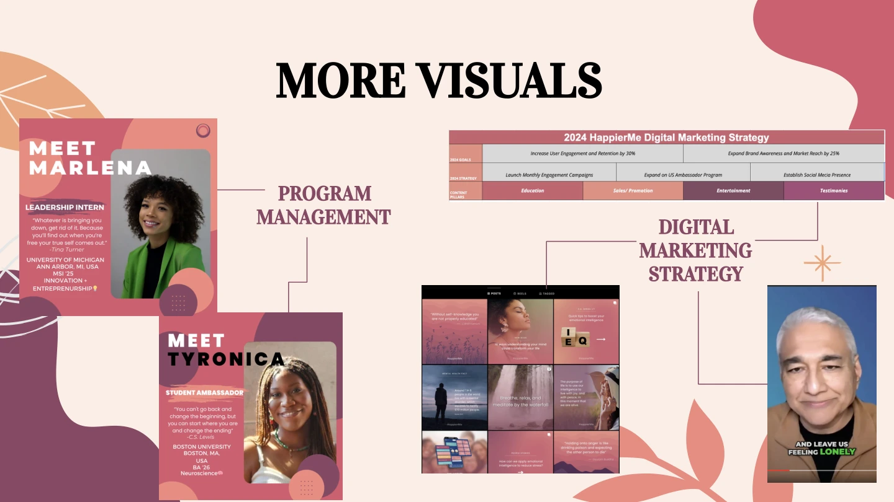
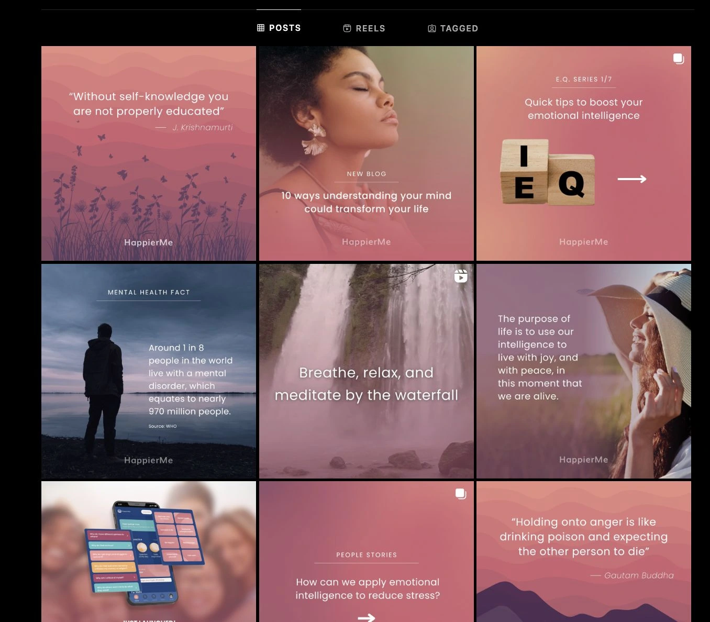
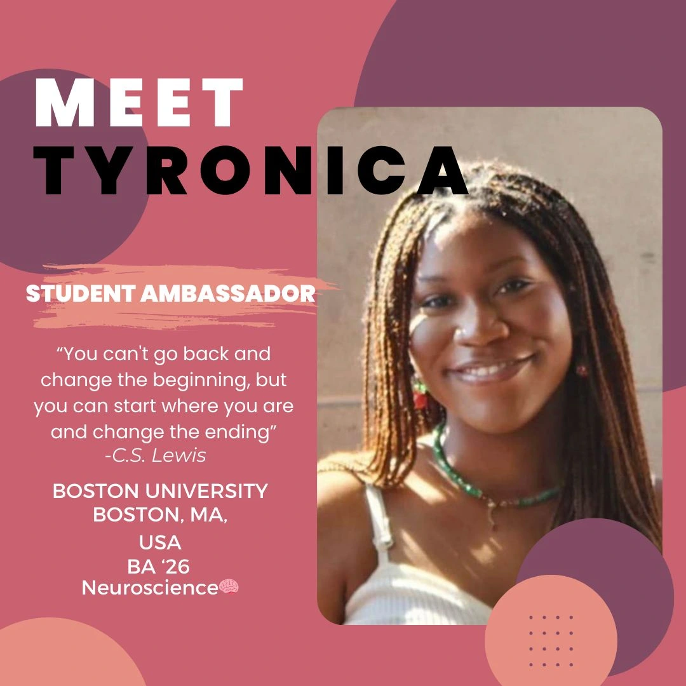
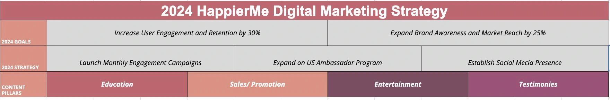

Student ambassadors
Campus representatives needed role clarity, onboarding, training, and usable promotional materials.
HappierMe wanted campus-level distribution for its mental-wellness product. The growth goal was clear; the operating system was not. I helped turn one-off student outreach into a more repeatable program with sourcing, screening, onboarding, communication, and engagement workflows.
4 min read · Click-through presentations

HappierMe is a mental-wellness and personal-development platform with learning content, reflective exercises, and tools for navigating emotional and everyday challenges. During my 2024 internship, the company was launching a dedicated teen section and working to extend its presence across college campuses and high schools.
That expansion required more than a social-media campaign. Students needed a relatable introduction to the product, while campus representatives needed a clear way to participate. The ambassador program connected product awareness, student relationships, and a repeatable operating process.
My HappierMe work ran from the graduate research project into a broader business strategy and UX engagement from January 2024 to January 2025. In the internship phase, I managed the U.S. Student Ambassador Program and worked across market research, UX research and design, competitive analysis, and marketing strategy.
I recruited and trained ambassadors, developed onboarding materials and program communications, and created marketing plans and creative assets. The role required me to connect the product story with the practical work of getting students equipped to introduce HappierMe within their own communities.
A campus ambassador program can become a collection of disconnected activities if every new representative has to work out the role independently. HappierMe needed a structure that could support growth across institutions while giving students enough guidance to represent the platform consistently.
The launch of the teen experience also broadened the audience. Messaging and community-building had to support mental-wellness awareness in student settings while remaining connected to the product’s actual features and the company’s wider marketing direction.
Campus representatives needed role clarity, onboarding, training, and usable promotional materials.
Potential users needed an introduction that felt relevant to their everyday lives.
Leadership and marketing needed a program that could be coordinated across schools and connected to product priorities.
I worked on the structure around recruitment and participation: who the program was for, how new ambassadors were introduced to HappierMe, and how they would be prepared to communicate its value. This connected the company’s expansion goal with a concrete onboarding experience.
The emphasis was on a repeatable process. Training and shared materials meant the program did not depend entirely on a separate, improvised explanation for each person who joined.
Across the broader program period, I recruited and trained 15 new ambassadors for a program spanning more than ten schools. My summer presentation captured an earlier milestone of five new campus ambassador organizations.
Those figures describe different moments in the work. Recruiting individuals and establishing a presence across organizations were related responsibilities, but each required attention to relationships, communication, and follow-through.
Ambassador introduction graphics presented the people behind the program, including student representatives and my own leadership-intern introduction. The creative used a consistent visual approach while keeping each person’s identity visible.
I also developed a detailed digital marketing calendar. Connecting content planning with the program made it easier to think about when an audience would encounter HappierMe, what message they would see, and how that message related to the broader product.
My responsibilities also included research and feature-development work. Contributing to the teen launch and to Daily Check-In and Wellness Score improvements helped me understand what the platform offered beyond its promotional language.
This was a cross-functional role: I translated between student audiences, marketing activities, product research, and leadership priorities. That connection matters because an ambassador can introduce a product more clearly when the program is grounded in the experience people will actually use.
The program required several pieces to work together. The artifacts show how I connected the operating structure with the public-facing content.
| What mattered | The response | Why it mattered |
|---|---|---|
| New representatives needed a common starting point. | Create a repeatable onboarding and training process. | Help ambassadors introduce the app with more consistency. |
| A multi-school program depended on local relationships. | Recruit and equip students within their own campus communities. | Make the program relevant beyond a central brand account. |
| Content needed continuity over time. | Develop a marketing calendar and coordinated creative. | Support planned communication instead of isolated posts. |
| Product and marketing work were happening together. | Connect research and launch knowledge with outreach materials. | Keep the audience story tied to the product experience. |
The nine-slide presentation covers the company, my responsibilities, accomplishments, product work, program creative, and reflections from summer 2024.





The broader engagement resulted in 15 ambassadors recruited and trained across a program spanning 10+ schools. The summer 2024 presentation records five new campus ambassador organizations at that stage of the work.
The same presentation reports a 20% improvement in social-media engagement associated with the detailed marketing calendar. This is the reported internship outcome; the presentation does not include a full analytics breakdown or isolate the effect of each individual post.
Alongside those outcomes, I left a more repeatable program structure: onboarding, training, communications, campaign planning, and creative examples that could support the next group of representatives. My contribution therefore covered both audience growth and the systems needed to keep the program running.
This experience helped me understand that program management lives in the details between an idea and someone else’s ability to execute it. Recruitment creates an opportunity; onboarding and communication make participation possible.
I also learned to connect metrics to their time period and unit of measurement. Individual ambassadors, campus organizations, and social engagement each describe a different part of the program. Keeping them separate makes the story of the work more useful and more accurate.


{kind=link}
{kind=link}
{kind=link}